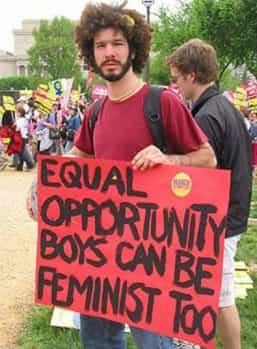

< < < Back
7 Traits Of The Male Feminist – Return Of Kings
The only reason radical feminism has managed to achieve such an influential and mainstream position in Western society is through the vital reinforcements provided by turn-coat gender traitors who willfully cannibalize other men to please their female overlords. This is the male feminist. These are men whose entire personas are predicated on keeping others from offending their female bosses. They shame natural male behavior and spread the intellectualized delusion that are today’s feminist talking-points. They publicly self-castrate, lying to themselves and others about their own sexual impulses and imperatives.
The great irony—and secret—is that they have the same ends as guys who learn game: to get the women into the sack (loath as they may be to admit it), except they do it by trying to curry their favor through obsequious groveling.
There’s nothing special about the specimen in the video above, except his exceptionally typical display of the tell-tale symptoms.
7 Traits of the Male Feminist
1. Lispy, effete voice.
There’s good science that shows that today’s men are being exposed to greater quantities of female hormones. Among the causes is a contaminated water supply with trace amounts of birth-control compounds from women’s urine. The mass consumption of soy products—a natural source of estrogen—is another likely culprit. Whatever the origins, there is an epidemic of ostensibly heterosexual men with “gay voice,” none more clearly than the male feminist, who deliberately takes the bass and manly tone out of his voice so as to not offend.
2. Condescending, snarky girl-tone and eye-rolling.
Added to the character of his voice is a patronizing, dismissive tone (often with “upspeak” and vocal fry) common with obnoxious teenage girls and a certain cross-section of (actual) gay men. Rather than disagree with an argument on its merits, they sigh through it like Al Gore at a presidential debate. To make matters worse, he artificially laces his speech with profanity, which rather than toughness, comes off like a moody girl cussing at her boyfriend.
3. Slovenly appearance, featuring a vegan-style beard.
The uniform of the male feminist is a non-threatening cocktail of emasculating hipster-wear, with an unkempt beard—the badge of today’s weak guy—and anything else that makes it patently obvious he never hits the gym and poses no danger whatsoever to anything.

4. Parrots word salad of incoherent feminist talking points.
The male feminist repeats all of the made-up jargon of the hysterical feminist (science fiction-sounding utterances like “cis-gender” and “sex-positive”). They also participate in the misappropriation and abuse of once-sound, useful English-language words like “consent,” “patriarchy,” and “privilege.”
5. Rape alarmist.
Like any lock-step feminist, the male feminist drops the Rape Card several times in any discussion, irrespective of subject. Like the word “smurf” in the 80s cartoon, the word “rape” is slowly being eroded of meaning by its catch-all use for anything and everything. The goal of this repeated invocation is to further whip up an exaggerated hysteria around rape, make everyone believe there’s a rapist on every corner, and make it sound like everyone’s whispering “rape jokes” when women aren’t looking. I can count on one hand how many rape jokes I’ve heard in my entire life, and still have enough fingers left over to stimulate the clitoris of a pixie cut-wearing, female-bodied individual.
6. Enabling feminist hysteria by providing excuses for bigoted behavior and by demanding that others also walk on egg shells.
According to this guy—and all feminists—it’s okay to be permanently scared of men if you’ve ever been victimized by them, however real or imagined that victimization may have been. By this rationale, I can permanently remain “apprehensive” and “have fear” of black people “as a category” because I was once robbed, at gun point, by a black guy. Furthermore, he excuses feminist hate-speech as simple “making-fun-of-you” not to be taken seriously, while simultaneously labeling anything said by the opposing side as 100-percent-serious hate-speech.
7. False veneer of intellectualism and academic grounding.
To lend some kind of legitimacy to his specious, problematic logic, he cites oblique academic-sounding references in a poorly constructed straw-man argument about what “men’s rights advocates” use to prove the existence of misandry. He engages in the typically feminist mental acrobatics that—when it’s all said and done—have turned night into day, made up into down, and rendered men into women.
Like any outsider-turned-convert to a religion, the male feminist is always more radical—and dangerous—to the non-believer. If, like many men, you have the misfortune to have to be around them, tread carefully. Always looking to prove his loyalty, the male feminist will do everything in his power to cut down a confident, masculine man—fabricating stories, running to the authorities, and anything else to throw you under bus—all to (hopefully) score a few points with his female overlords.
 If you like this article and are concerned about the future of the Western world, check out Roosh's book Free Speech Isn't Free. It gives an inside look to how the globalist establishment is attempting to marginalize masculine men with a leftist agenda that promotes censorship, feminism, and sterility. It also shares key knowledge and tools that you can use to defend yourself against social justice attacks. Click here to learn more about the book. Your support will help maintain our operation.
If you like this article and are concerned about the future of the Western world, check out Roosh's book Free Speech Isn't Free. It gives an inside look to how the globalist establishment is attempting to marginalize masculine men with a leftist agenda that promotes censorship, feminism, and sterility. It also shares key knowledge and tools that you can use to defend yourself against social justice attacks. Click here to learn more about the book. Your support will help maintain our operation.
Read More: Help Raise Awareness About Rape Tourette’s